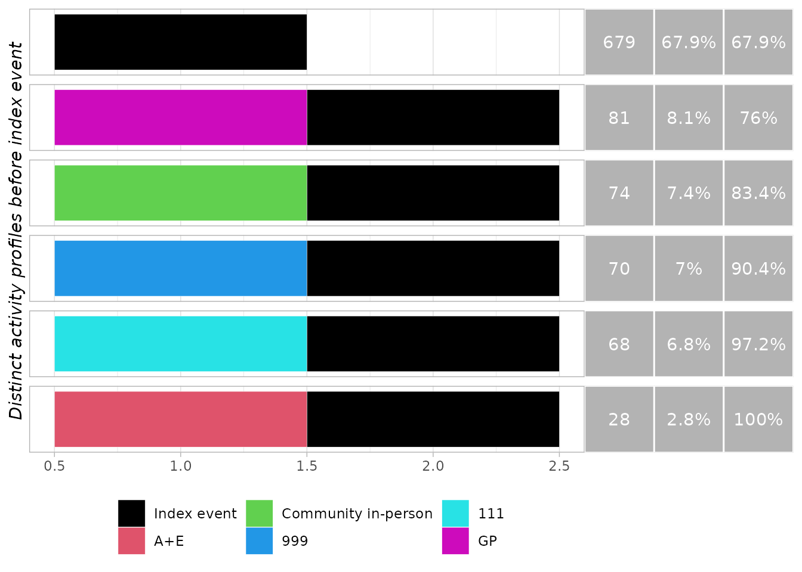
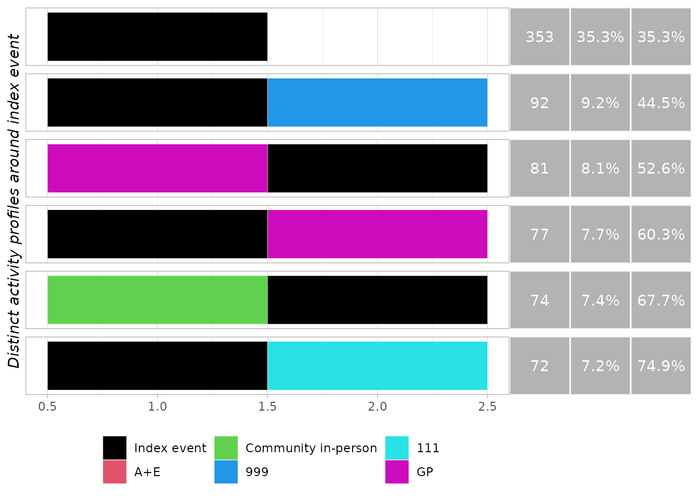

PrePost
PrePost.RmdConnecting to the database
First, generate the artificial data (sqlite files for each database), as follows:
library(PrePost)
# generate example databases
prepost_example()This will create a folder called gendata in your working directory, containing the database files for the example cohort. Next, you can connect to this databases using:
Define the cohort
Here an example cohort is provided on the example server. All we need is the (pseudo) NHS number and the datetime of interest.
Define the activity filters
Here we must decide which healthcare activity we are interested in. We can define any number of filters to act on SWD activity columns, as a named list. The name of each filter will be used in the subsequent plots.
activity_filter <- list(
"A+E" = "pod_l1=='secondary' & pod_l2a=='ae'",
"Community in-person" = "pod_l1=='community' & pod_l3=='physical'",
"999" = "pod_l1=='999'",
"111" = "pod_l1=='111'",
"GP" = "pod_l1=='primary_care_contact'"
)Create the PrePost object
Next we create a PrePost object, defining the window of interest. If
working on the ICB servers you will need to pass the name of your ICB
data source as the parameter srv_name. Please see the ICDB
package documentation for instructions on how to setup the ICB data
source. In this example we directly pass an example_server - this is
purely for demonstration.
obj <- PrePost(nhs_number = ids,
index_event_time = date,
window_pre = 31,
window_post = 30,
window_units = "days",
activity_filter = activity_filter,
svr = example_server(),
svr_name = NA_character_)
Activity analysis
Run the activity analysis
run_activity_summary(obj, "before")| Activity | Mean activity per instance | Instances with >0 activity | Mean activity per instance with >0 activity |
|---|---|---|---|
| 111 | 0.07 | 6.8% | 1 |
| 999 | 0.07 | 7% | 1 |
| A+E | 0.03 | 2.8% | 1 |
| Community in-person | 0.07 | 7.4% | 1 |
| GP | 0.08 | 8.1% | 1 |
run_activity_summary(obj, "after")| Activity | Mean activity per instance | Instances with >0 activity | Mean activity per instance with >0 activity |
|---|---|---|---|
| 111 | 0.07 | 7.2% | 1 |
| 999 | 0.09 | 9.2% | 1 |
| A+E | 0.02 | 2.3% | 1 |
| Community in-person | 0.06 | 6.2% | 1 |
| GP | 0.08 | 7.7% | 1 |
Activity volume
Analyse the activity volume
run_activity_volume(obj, "before")
run_activity_volume(obj, "after")Trace plots
Generate the trace plots
generate_trace_plots(obj, "before")
generate_trace_plots(obj, "before")
generate_trace_plots(obj, "around")